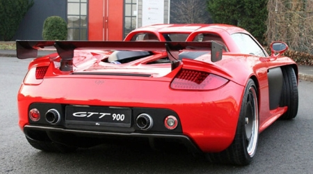

<!DOCTYPE html>
<html>
<head>
<link rel="stylesheet" type="text/css" href="nav.css">
<style type="text/css"> 
.zoomin img 
{
 height: 200px; width: 300px; 
 -webkit-transition: all 2s ease;
 -moz-transition: all 2s ease;
 -ms-transition: all 2s ease; 
 transition: all 2s ease; 
 } 
 .zoomin img:hover 
 { 
 height: 400px; width: 600px;
} 
</style>
</head>
<body background="bbbcxxmmm.jpg" >
<h2 id="top"></h2>
<div class="To">
<ul>
  <li><a href="home.html">Home</a></li>
  <li><a href="#contact">Cars Description</a></li>
  <li><a href="jquery-product-comparison\index.html">Cars Comparision</a></li>
  <li><a href="abtus.html">About the developers</a></li>
</ul>
</div>
<div class="vertical-menu">
  <a href="#">CARS</a>
  <a href="Audi A8l.html">Audi A8l</a>
  <a href="Bmw1.html">BMW I8</a>
  <a href="Bugatti Veyron.html">Bugatti Veyron</a>
  <a href="ferrari f50.html">Ferrari F50</a>
  <a href="laferrari.html">Ferrari Laferrari</a>
  <a href="ford mondeo.html">Ford Mondeo</a>
  <a href="ford mustang.html">Ford Mustang</a>
  <a href="jaguar xe.html">Jaguar XE</a>
  <a href="jaguar xj220.html">Jaguar XJ220</a>
  <a href="koenisegg agera r.html">Koenisegg Agera R</a>
  <a href="lambo veneno.html">Lamborghini Veneno</a>
  <a href="lamborghini aventador.html">Lamborghini Aventador</a>
  <a href="lamborghini gallardo.html">Lamborghini Gallardo</a>
  <a href="lamborghini huracan.html">Lamborghini Huracan</a>
  <a href="mercedes amgcla.html">Mecedes AMG CLA</a>
  <a href="pagani huyara.html">Pagani Huyara</a>
  <a href="#" class="active">Porsche Carrera GT</a>
  <a href="Rolls royce.html">Rolls Royce</a>
  <a href="volkswagen golf.html">Volkswagen Golf</a>
  <a href="zenvo st1.html">Zenvo ST1</a>
</div>
<div class="d">
 <p style="color:red;font-size:32px;">Jump to Particular Sections</p>
 <a href="#i" style="color:White;">Introduction</a><br>
 <a href="#t" style="color:White;">Interiors</a><br>
<a href="#p" style="color:White;">Pricing</a><br>
<a href="#e" style="color:White;">Engine</a><br>
<a href="#s" style="color:White;">Specifications</a><br>
</div>
<div class="c">
<h2 id="i"></h2>
<left><h3 style="color:black;"><a name="in" >Interiors</a></h3>
<left><h1> Porsche Carrera GT</h1>

<left><h2>Introduction</h2>
<p1>
<pre>
 The Porsche Carrera GT (Project Code 980) is a mid engined
 sports car that was manufactured by Porsche between 2004 to 2007
 in Leipzig, Germany. Sports Car International named the
 Carrera GT number one on its list of Top Sports Cars of the
 2000s, and number eight on Top Sports Cars of All Time list.
 For its advanced technology and development of its chassis the
 Popular Science magazine granted the "Best of What's New"
 award in 2003.
<left><h3>Differnt Views</h3>
<left><h4>Front View</h4>
<div class="zoomin">

</div>
<left><h4>Top View</h4>
<div class="zoomin">

</div>
<left><h4>Rear View</h4>
<div class="zoomin">

</div>
<left><h4>Side View</h4>
<div class="zoomin">

</div>
<left><h3 style="color:black;"><a name="t" >Interiors</a></h3>
<left><h3>Interiors</h3>
<div class="zoomin">

</div>
<br>
<div class="zoomin">

</div>
<br>
<div class="zoomin">

</div>
<left><h3 style="color:black;"><a name="p" >Interiors</a></h3>
<left><h3>Pricing</h3>
 It's not the $440,000 Carrera GT's absurdly fast top speed that
 awes you-we were aboard yet had no fear as Porsche's test driver
 clocked 208 mph (with a tailwind) on a Soviet-era military runway
 in the former East Germany..
 <left><h3 style="color:black;"><a name="e" >Interiors</a></h3>
<left><h3>Engine</h3>
 Drivetrain layout: Mid-engine RWD
Engine type: 68° (Slightly odd firing due to not being 72° V angle)
 V10, aluminium block and heads
Valve gear: DOHC, 4 valves per cylinder (40 valves total), variable
 valve timing on intake camshafts, sodium-cooled exhaust valves
Bore x stroke: 3.86 in (98 mm) x 2.99 in (76 mm), Nikasil coated bores,
 forged titanium connecting rods, forged pistons
Displacement, ci/cc: 349.8/5733
Compression ratio: 12.0:1
Max SAE net horsepower: 612 hp (450 kW)[9] at 8,000 rpm
Max SAE net torque,: 435 lb·ft (590 N·m) at 5,750 rpm
Specific output, hp/liter: 105.5
Weight to power, lb/hp: 4.97
Transmission: 6-speed manual, two plate ceramic dry clutch (PCCC-Porsche
 Ceramic Composite Clutch)
Redline: 8,400 rpm
 <left><h3 style="color:black;"><a name="s" >Interiors</a></h3>
<left><h3>Specifications</h3>
<table bgcolor="red" width="70%" Border="1" cellpadding="5" cellspacing="5">
<caption></caption>
<tr>
<td>Manufacturer</td>
<td>Porsche</td>
</tr>
<td>Production</td>
<td>2010 to 2011 (Super Sport)</td>
</tr>
<tr>
<td>Assembly</td>
<td>Molsheim, Alsace, France</td>
</tr>
<tr>
<td>Designer</td>
<td>Jozef Kabaň</td>
</tr>
<tr>
<td>Class</td>
<td>Sports Car</td>
</tr>
<tr>
<td>Engine</td>
<td>8.0 L (488 cu in) W16 quad-turbocharged</td>
</tr>
<tr>
<td>Transmission</td>
<td>7 speed DSG automatic transmission</td>
</tr>
<tr>
<td>Max. power</td>
<td>558 hp (416 kW)</td>
</tr>
<tr>
<td>Top speed</td>
<td>330 km/h</td>
</tr>
<tr>
<td>0 to 100 km/h (0 to 60 mph)</td>
<td>2.46 seconds</td>
</tr>
<tr>
<td>100 to 0 km/h (60 to 0 mph)</td>
<td>31.4 m</td>
</tr>
<tr>
<td>Fuel Consumption</td>
<td>15.6 l/100km </td>
</tr>
</table>
</pre>
</p1>
<font size="100px"><a href="#top" style="color:lightblue;"><p style="text-align:center">Back to top</a></font>
</div>
</body>
</html>